現実世界にとらわれないクリエイターたちの独創的なアバター文化の信仰と社会的認知の向上を目的として、
一般社団法人VRMコンソーシアムが、3Dアバターの作品を募集、優れた作品を表彰する大会イベント。
投稿いただいたアバター作品は、今回の評価基準である、
キャラクター性
ファッション性
先進性
において各方面で活躍されるクリエイターの皆様を審査員にお迎えして選考を行い、
優秀作品は2023年12月22日20:00の生放送「アバターアワード2023授賞式」の
バーチャルランウェイにて紹介、表彰いたしました。
次年度も開催の際はぜひ、みなさまのご参加をお待ちしております！


垓交官YUKI 専用法衣 天鴉
投稿者：垓交官YUKI氏
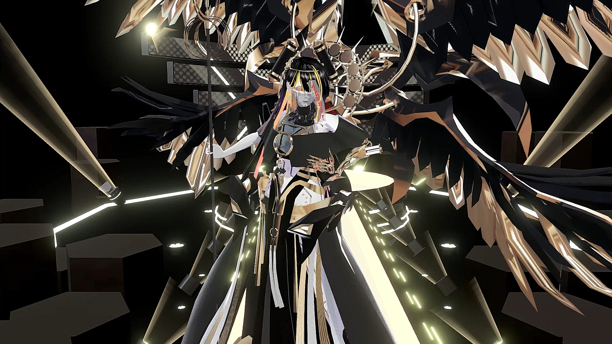 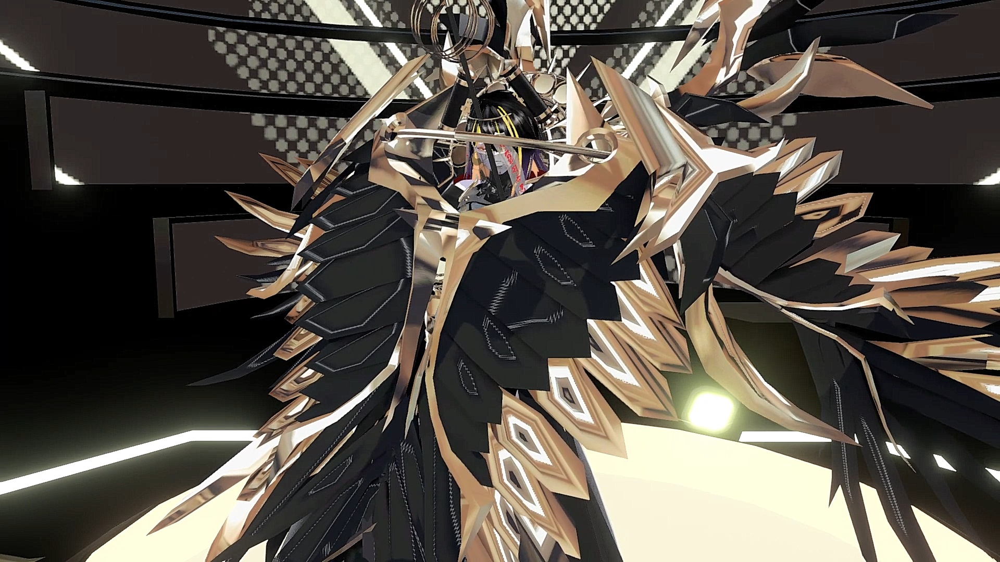
審査員コメント
まさにデジタルならではの、デジタルにしかできないファッションへの挑戦がそこかしこに詰め込まれていてクオリティが高い作品。トランスフォームする姿も圧巻でカッコいい。ワクワクしました。（丸山）
まさに神がかった作品。感情によって翼が広がり、金色に輝くという表現に驚かされました。光背や錫杖などの仏教的なモチーフを上手に取り入れているところも面白い。（軍地）

Daiya
投稿者：HiZE氏
 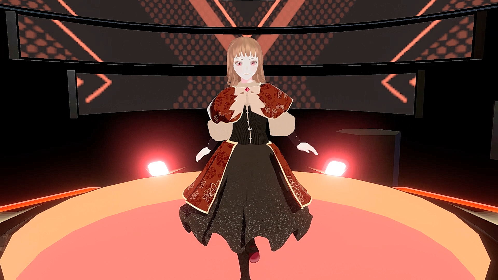
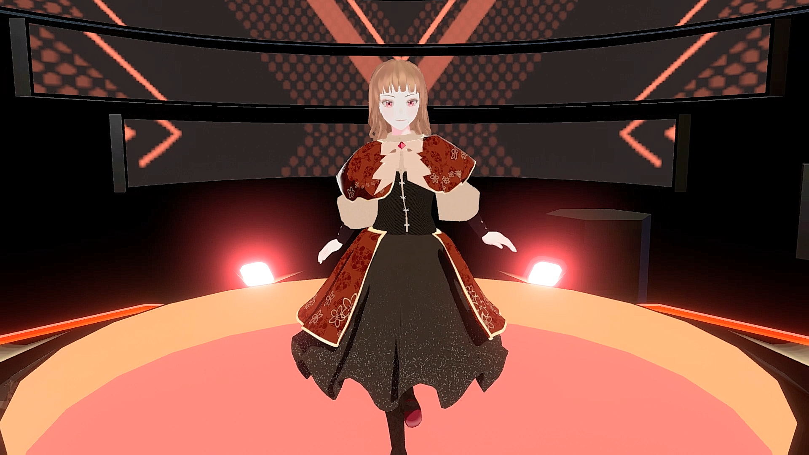
審査員コメント
ゲームの物語の主人公のようなファッション。赤いヴェルヴェットの上の金刺繍などの表現がかわいい。(軍地)
派手さや性的なアピールに頼ることなく、スタンダードな造形で見せてくる、という難しいチャレンジを成功させています。表情なども「生きてる」感じがしました。（ヨコオ）
波沈むフェル子
投稿者：フィヤン子氏
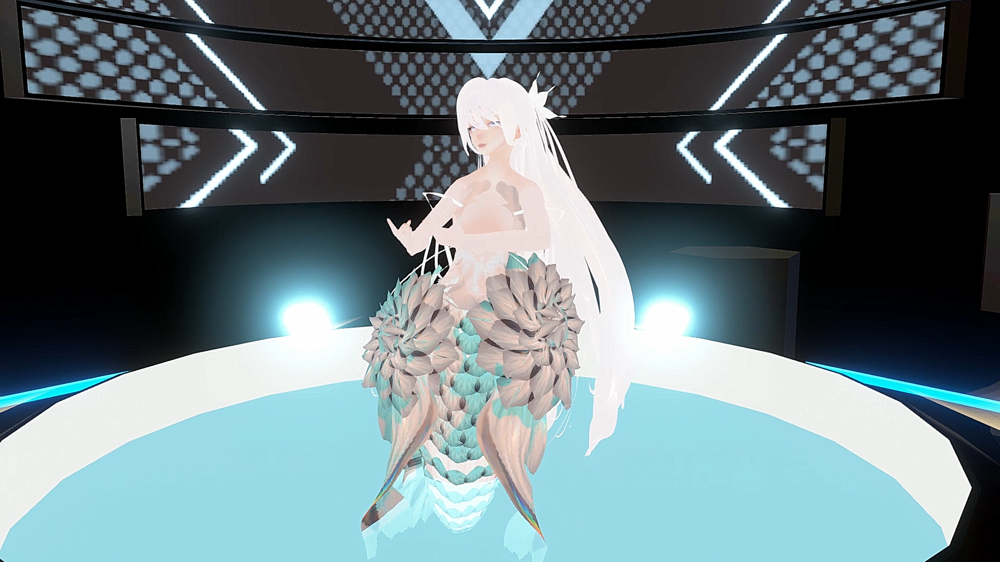 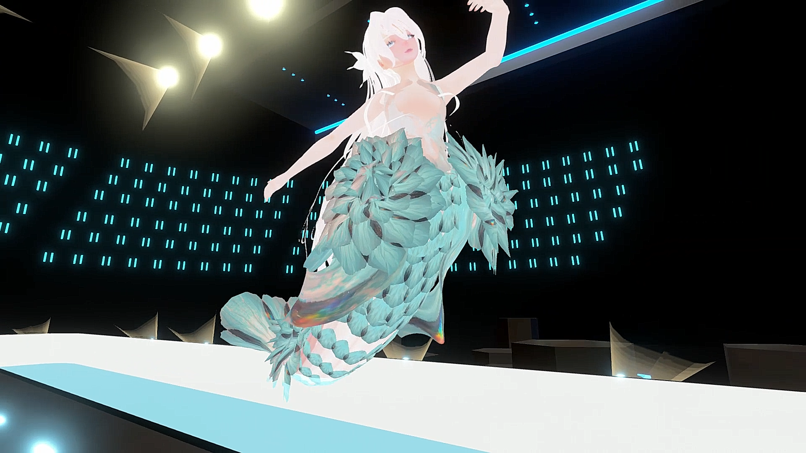
審査員コメント
人魚のような、闘魚のベタのような優雅な緩やかな動きと花弁のような鱗のようなマテリアルがどこか危うく切ない感じがロマンティックでした。（丸山）
なるほど、これはまさに水中ウォーキング。マーメイドのデザインとしての完成度。 花のような鱗や、透明感があるヘアスタイルの表現、カラートーンのセンスの良さなど、美しさにこだわった作品です。（軍地）
SUMIKURO WORLD
拓実 MAGIC OF LiFE氏
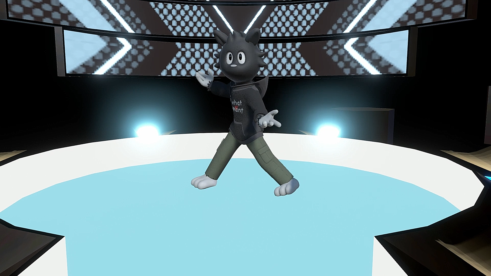 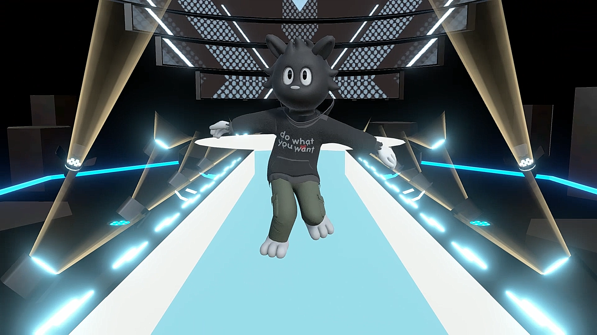
審査員コメント
アート系フィギュアの文脈をうまくアバターに落とし込めていて、とても完成度の高い作品だと思います。別キャラや周辺のアイテムなどが増える事もイメージ出来て、見ていて楽しいです。（ヨコオ）
ファッション自体はシンプルでストリートリアルであるけれど全身のキャラクターの感じが何ともおしゃれで、好き。（丸山）
今っぽいストリートカルチャーから生まれたキャラクター。真っ黒、というモード感。音楽とマッチしたダンスもまさにストリート感がたっぷり。キャラクターを生かして、フォギュアにしたり、ファッションアイテムにしたり、高い展開性が期待できます。（軍地）
アバターアワード2023 ユーザー投票賞
「SUMIKURO WORLD」（投稿者：拓実 MAGIC OF LiFE氏）
「大丸松坂屋アバター 風璃」（投稿者：大丸・松坂屋アバター販売公式氏）
「大丸松坂屋アバター 瑚紅姫」（投稿者：大丸・松坂屋アバター販売公式氏）
株式会社HIKKYの協力のもと新設された「ユーザー投票賞」では、
「Vket Winter 2023」（開催期間：2023年12月2日～17日）会場内でユーザー投票を実施しました。
その結果、3作品が同率1位で受賞しました。
 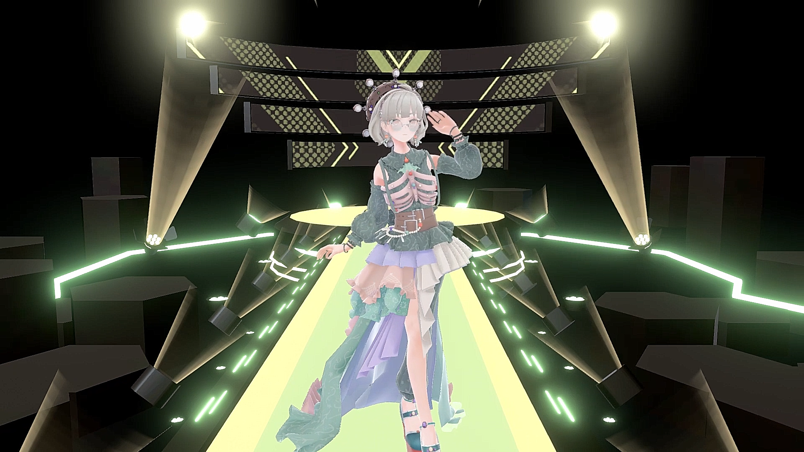
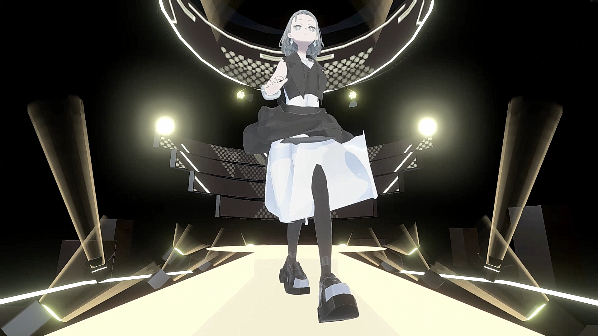
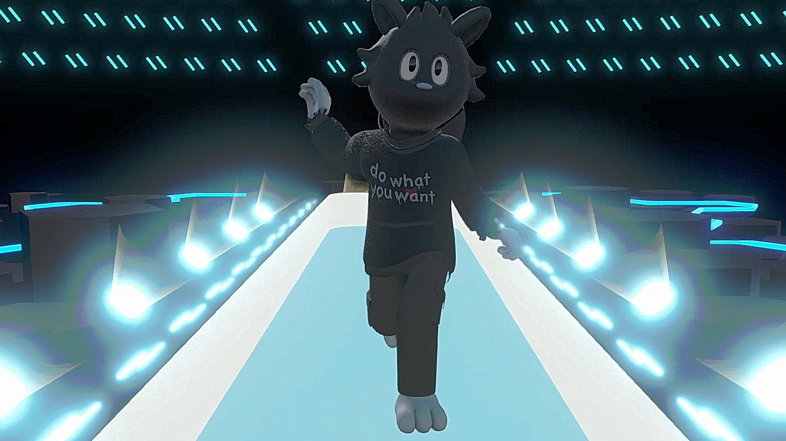
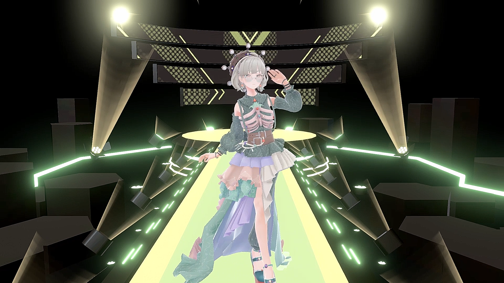
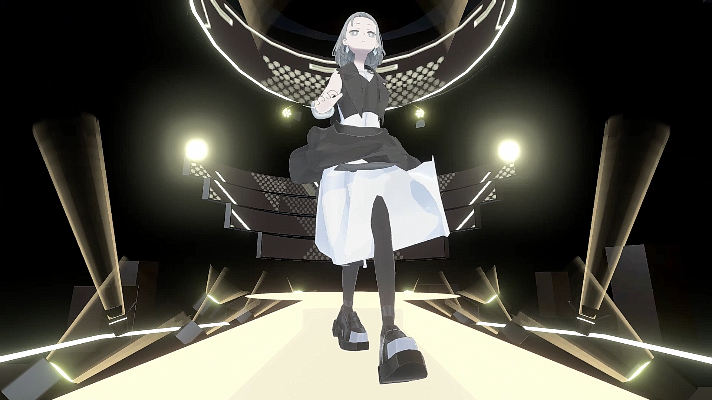
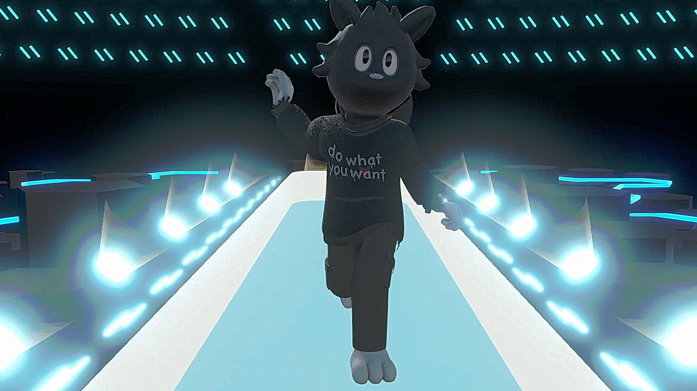
ユーザー投票コメント
■大丸松坂屋アバター 風璃
大丸のアバターということで新機軸の企画だと思います。応援したいです。
■大丸松坂屋アバター 瑚紅姫
衣装の作りや、装飾にオリジナリティがあり、他にないデザインのアバターだと思いました！
応援してます！
■SUMIKURO
シンプルなデザインで愛着が湧きます！
むちゃくちゃカッコよくて可愛いです。愛嬌がありすごく良いキャラクターだと思います。

・「SUMIKURO WORLD」（投稿者：拓実 MAGIC OF LiFE氏、キャラクターデザイン：柴さん氏、3Dモデリング：フレスキング氏）
・「ヴァイオレット・ライト」（投稿者：伽羅メルク氏）
・「DragonFrame Re-V “The Lemuria”」（投稿者：稲荷きんちゃく太郎氏）
・「大丸松坂屋アバター 風璃」（投稿者：大丸・松坂屋アバター販売公式氏、制作：株式会社V、イラスト：BALANCE氏、3DCGモデリング：もちひよこ氏、明日葉わがみ氏、Yzha氏）
・「ゴーストエルフ クリア・ペリドット」（投稿者：クリア・ペリドット氏、制作協力者(衣装)：LuysShop氏）
・「大丸松坂屋アバター 瑚紅姫」（投稿者：大丸・松坂屋アバター販売公式氏、制作：株式会社V、イラスト：しく氏、3DCGモデリング：ボブキャット氏、（仮）氏）
・「波沈むフェル子」（投稿者：フィヤン子氏）
・「REIRO13th bloomaryShield2」（投稿者：REIRO_MCno151 VBC CLI）
・「Witchild_50th anniversary edition」（投稿者：REIRO_MCno151 VBC CLI）
・「Daiya」（投稿者：HiZE）
・「垓交官YUKI 専用法衣 天鴉」（投稿者：垓交官YUKI）
・「EFFA・CREARE」（投稿者：SYUN）
※アバターアワード全応募作品については、X（旧：Twitter）のハッシュタグ検索「#AvatarAward2023」からご覧いただけます。
アバターライフ部門 大賞
『みんながいるから限界を超えられる 限界！スクワット部』
（投稿者：星麦しげ氏）
総勢223点からVRMコンソーシアムの審議のもと、
アバター同士ならではの交流をテーマとする写真を表彰する
アバターライフ部門の大賞を選出いたしました。

アバターアワード実行委員長 大前広樹コメント
今回のアバターライフ部門の投稿は本当に拝見するのが楽しくて、みなさん本当にさまざまな、そして豊かなアバターライフを送っているのだなぁ！と感じました。皆さんのアバターライフをすこしお裾分け頂けて、本当に楽しい気分になりました。ありがとうございます！いやー、もう全員優勝！
。。。と言いたいところではあるのですが、その中からあえて選ばなければならないということで、選ばせて頂いたのが「限界スクワット部」でみなさんがスクワット中のこの一枚です！皆さんが楽しく、そして真剣に参加しているのが分かりやすく伝わるこの一枚。毎週こうやって集まってスクワットしてるんだろうなぁ、という、このコミュニティが参加者のみなさんの人生の一部になっている感じが活動内容と共にダイレクトに伝わってきて、まさにアバターライフの一枚！と感じました。
アバターライフ部門
ドットエスティ賞
『お友達と一緒にバーチャル上でお出掛けしたり、動画録ったり、おソロコーデして写真撮ったりして楽しんでます！！！！』
（投稿者：クリエ氏）
アバターライフ部門の「ドットエスティ賞」では、ファッション業界でのメタバースを推進する
「アダストリア」の公式WEBストア「.st」（ドットエスティ）を迎え、
洋服・ファッション小物を販売しているブランドならではの観点から選定を行いました。
.st（ドットエスティ） 込山加奈コメント
写真に写る皆さんが思い思いのお洋服を着てお洒落を楽しんでいることが想像できました。「今日のお洋服かわいいね！似合ってるね」なんて会話が聞こえてきそうだなと感じましたし、ドットエスティとしても好きなお洋服を着た際に誰かにナイスだねって共感してもらえる事を大切にしながら立ち上げ当初からプロジェクトを行ってきました。そのような空気を感じられた為、今回選ばせていただきました。
アバターアワード2023特別功労賞
宝鐘マリン
「アバターアワード2023特別功労賞」は、アバター文化の一般への認知度向上や文化推進に
最も貢献した人に贈られる賞です。初代受賞の「キズナアイ」、2022年に選出された
「バーチャル美少女ねむ」に続き、今回は「宝鐘マリン」に決定しました。
「宝鐘マリン」は、楽曲活動などを通じてSNSで幅広く一般層に認知・支持されていること、
動画配信のみならず、さまざまな企画やVRイベントなどの新しい活動に積極的に取り組み、
アバター文化について広く詳しく紹介した功績を称え、表彰しました。
宝鐘マリン 受賞コメント
今回はこのような賞をいただきありがとうございます！バーチャルキャスト様のお力添えで、VRファンミーティングやVRライブをさせていただいて本当にありがとうございました！楽曲や配信や動画、さまざまな方向からVTuber文化を広めつつ、船長をもっと知っていただけるようこれからもがんばっていきます！


ヨコオタロウ
ゲームクリエイター。株式会社ナムコ、株式会社ソニー・コンピュータエンタテインメントを経て、 株式会社キャビアへ入社。デザイナーとして経験を積んだ後、 「ドラッグ オン ドラグーン」シリーズや『ニーア ゲシュタルト/レプリカント』のディレクションを担当する。 近年は、スマートフォン向けアプリ『シノアリス』『ニーア リィンカーネーション』や、 漫画『君死ニタマフ事ナカレ』『吉野家兄弟』や舞台の原作など、幅広く活動している。
軍地彩弓
編集者/ファッション・クリエイティブ・ディレクター。 講談社『ViVi』編集部でフリーライターとして活動。 その後、『GLAMOROUS』の立ち上げに尽力する。2008年に現コンデナスト・ジャパンに入社。 クリエイティブ・ディレクターとして、『VOGUE GIRL』の創刊と運営に携わる。 2014年に株式会社gumi-gumiを設立。 『Numero TOKYO』のエディトリアルアドバイザー、ドラマ『ファーストクラス』（フジテレビ系） や映画のファッション監修、Netflixドラマ『Followers』のファッションスーパーバイザー、 企業のコンサルティングなど幅広く活動。
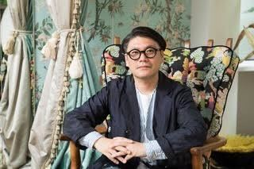
丸山敬太
ファッションデザイナー。1965年東京・原宿生まれ。1997年パリにてコレクションを発表。 2020年K.M Design Studio を設立、代表取締役に就任。近年は、自身のブランド活動だけに留まらず、 ファストファッションから制服、ブランドプロデュースに加え、 ファッションの枠を超え“食”や“住”へ、活動の場を積極的に広げている。 また、2.5次元と呼ばれるゲームやアニメーションへのデザイン提供や、舞台美術、盆踊りの プロデュースなど、ファッションの可能性を常に多角的な視線で捉えている。 来年2024年にブランド30周年を迎える。


.st（ドットエスティ）
「グローバルワーク」「ニコアンド」「ローリーズファーム」など30以上のブランドが集まる
アダストリアグループの公式WEBストア。 ＝全国約1,400店舗のブランド店舗と、
WEBストア共通で使える！貯まる！ドットエスティポイント ＝4,000名を超えるスタッフが
毎日更新する最新コーディネートが集まるスタッフボード ＝お買い物の参考になる、豊富でリアルなお客さまの商品レビュー。
年齢も性別も飛び越えて、幅広いブランドで自由なファッションが楽しめる「楽しいほうのファッションストア」です。
2021年にWEBストアとお店のメリットを融合したOMO型店舗「ドットエスティストア」をオープン。
現在、全国に10店舗展開中。(2023年10月末時点)
webサイト iOS版アプリ Android版アプリ


田口尚平
1991年生まれ、2015年にテレビ東京にアナウンサーとして入社。
スポーツ中継やバラエティ番組を担当。高校生ゲーム大会「STAGE:０」プロデュースを経験した後、
テレビ東京を退職。早稲田大学院ビジネススクールでMBAを取得し、「オタクを極める」という目標を掲げ、
主にゲームやアニメ領域でキャスター/MCとして活躍している。
・受賞者は11月上旬までに連絡を持って代えさせていただきます。
・Xのダイレクトメッセージ、もしくはご登録いただきましたメールアドレス宛てにて、
VRMコンソーシアムより連絡いたします。
以下の状況により無効となる場合がございます。
・受賞で獲得された権利は、他の人に譲渡することはできません。
・受賞者にのみ提供される情報を他者に共有した場合、当選が無効となります。
・受賞者と長らく連絡が取れない場合には、受賞を無効とさせていただく場合もございます。
あらかじめご了承ください。

最終審査にノミネートされたアバター作品はランウェイによるウォーキング動画の収録、
およびVR会場によるアバターモデルの展示を予定しております。
その際、以下の条件を満たす必要がございますので、ご対応が難しい場合、
応募写真のみでのご紹介とさせていただきますのであらかじめご了承ください。
・VRM形式でファイル提出が可能である事
・FBX形式でファイル提出が可能である事
・日本語での意思疎通が可能である方
・18歳未満の場合、保護者の同意を頂ける方


VR時代の3Dキャラクター・アバター使用を想定したプラットフォーム非依存のファイル形式です。
従来の3Dモデルとしてのテクスチャやボーンといった情報に加え、
視線設定など一人称で操作するアバターに必要な情報を扱えるようにし、
環境により異なるスケールや座標系などを統一することで、3Dアバターが配信・ゲームなどあらゆるプラットフォームで使用されることを想定しています。
また、人が操作して人格を演じるアバターの特性を考慮して、
このアバターを他人が使用しても良いか、暴力表現をしても良いか、などアバター特有の権利までもファイルに埋め込むことが可能です。
将来的には3Dモデルの権利保護の機能を兼ね備え、アイテムやアバターの着せ替え販売を実現するなど
3Dモデルが流通する際の標準フォーマットを目指していきます。
ＶＲＭの技術仕様につきましては以下のドキュメントをご覧ください。


Copyright © 一般社団法人VRMコンソーシアム All Right Reserved.